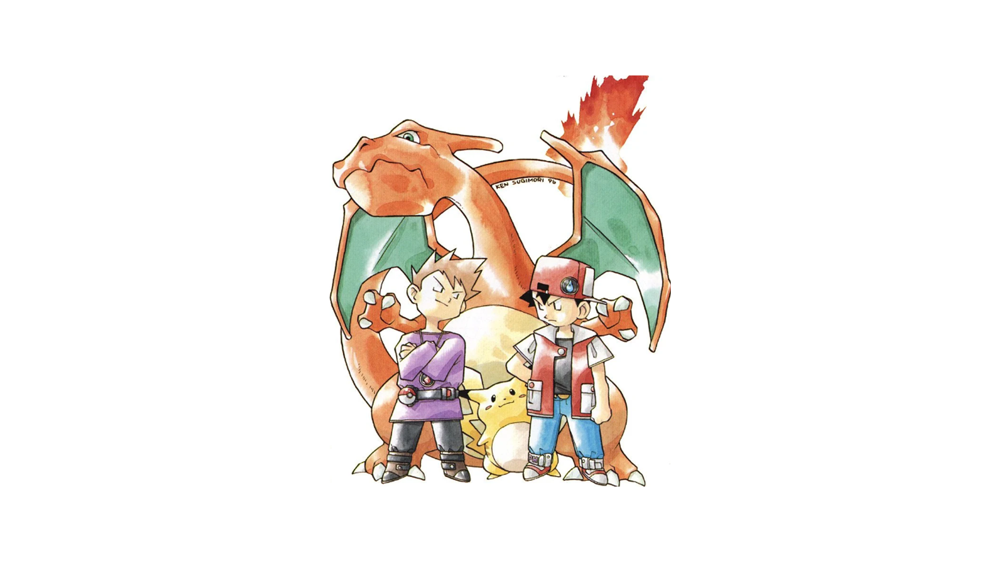
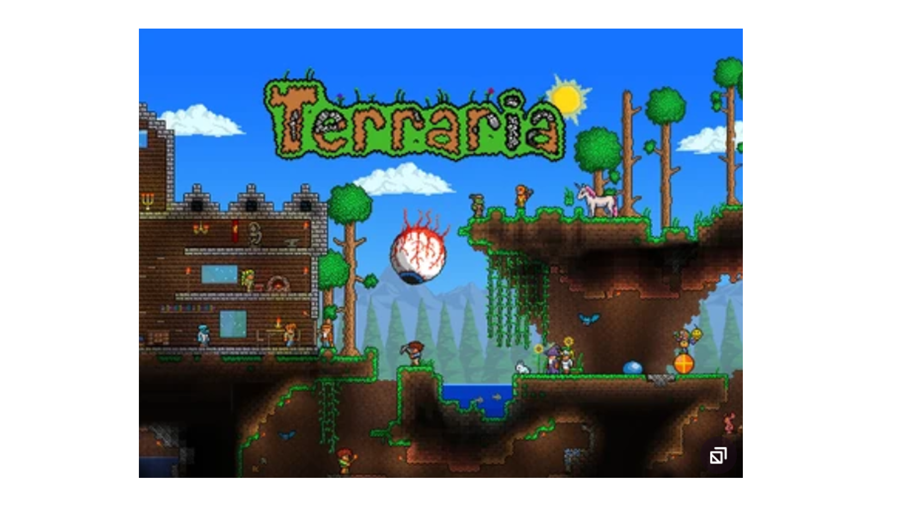

Designing for Pixels
Ken Sugimori designed many of the original generation of Pokemon. His water color style translated wonderfully to working with a limited palette. The protaginists themselves appear short and stubby in their early renders as well as they would in pixel form.

(Red, Blue, Charizard and Pikachu, Ken Sugimori 1996)
Legacy of the Pixel
Even though polygon 3-D graphics has long since been the standard of videogame graphics, 2-D pixel based games are still being created and played. These games often pay homage to games of the past in design and style, notably like the short chubby characters that first appeared at Nintendo.

(Terraria Box Art, Relogic 2011)
 RETURN TO MAIN PAGE ABOVE
RETURN TO MAIN PAGE ABOVE